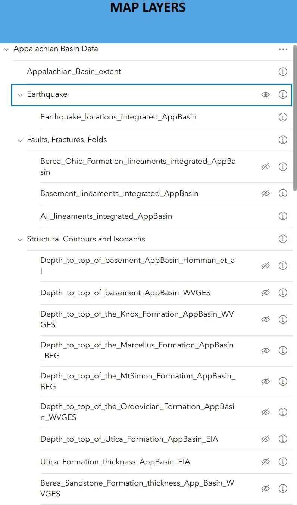

Procesar de forma repetible una colección extensa de rásteres
Apliqué un flujo programado de conversión ráster a vector a la colección de archivos geológicos, sustituyendo conversiones manuales repetidas por una secuencia de procesamiento coherente.
Desarrollé un flujo en Python para convertir más de 400 rásteres geológicos en conjuntos de polígonos destinados a publicación en SIG web. El trabajo conectó el procesamiento espacial repetible con el atlas interactivo de NETL, preparando datos científicos para que investigadores pudieran explorar capas por cuenca mediante una interfaz cartográfica de fácil acceso.

El problema
Cientos de archivos ráster geológicos debían convertirse en capas utilizables en mapas web. Repetir manualmente la conversión y preparación dificultaría procesar la colección de forma coherente y mantenerla para visualización.
Mi aporte
Desarrollé la automatización en Python que procesó más de 400 archivos ráster y los convirtió en conjuntos de polígonos vectoriales, y preparé los resultados para publicación en SIG. Mi contribución se centró en el flujo de procesamiento y entrega de datos, sin atribuirme la autoría exclusiva del atlas de NETL ni de todas las capas que muestra.
Enfoque
Apliqué un flujo programado de conversión ráster a vector a la colección de archivos geológicos, sustituyendo conversiones manuales repetidas por una secuencia de procesamiento coherente.
Generé archivos de polígonos vectoriales adecuados para cargarlos y utilizarlos en el entorno SIG web. La preparación de datos conectó los rásteres de origen con capas que podían organizarse y explorarse en línea.
Preparé resultados para el atlas interactivo de NETL, donde los controles temáticos permiten examinar información geológica y estructural en mapas específicos de cada cuenca.
Resultado y alcance
El flujo preparó cientos de conjuntos de datos geológicos para su uso en SIG web y apoyó su presentación en el atlas de NETL. La aplicación pública muestra el contexto de entrega: permite explorar mapas de cuencas, categorías temáticas de capas y datos de formaciones individuales. Los scripts originales de procesamiento no son públicos.
Aprendizaje y evolución
El proyecto demuestra el paso de ejecutar una operación espacial a entregar un flujo reproducible de preparación y servicio de datos. Conecta procesamiento por lotes, resultados espaciales coherentes y requisitos de publicación: un patrón transferible para incorporar datos de investigación en interfaces que otras personas pueden utilizar sin ejecutar el código subyacente.
Evidencia y detalles técnicos
Despliega una sección para consultar métodos, figuras o resultados detallados. Selecciona una figura para verla a tamaño completo. Las figuras y capturas originales se acompañan de explicaciones en español.
Estas capturas muestran cómo aparecen los mapas de cuencas, las categorías temáticas y las capas geológicas detalladas en la aplicación de NETL. Documentan el entorno al que dio soporte el flujo de preparación de ráster a vector.


El flujo documentado procesó más de 400 rásteres geológicos y los convirtió en archivos de polígonos vectoriales para publicación en SIG. Ese número no se acompaña de estimaciones no medidas de ahorro de tiempo ni de impacto comercial.
Proyectos relacionados
Primer autor e investigador geoespacial
Desarrollé mapas base de uso del suelo a 30 metros que representan un mismo territorio de Estados Unidos en varios sistemas de modelado. Esta publicación en Scientific Data, de la que soy primer autor, combina procesamiento geoespacial, diseño de clasificaciones y comparación cuantitativa para integrar datos ambientales heterogéneos en GCAM, CLM y LUH2.
Creador y único desarrollador
Concebí, diseñé y desarrollé una aplicación web que conecta planos arquitectónicos con datos prediales de Quito. Como único desarrollador, construí la interfaz, las APIs en Python, las integraciones de datos municipales y las herramientas interactivas de documentos, creando un espacio para planificar remodelaciones, realizar mediciones y analizar predios espacialmente.
Desarrollador de flujos de datos en Python
Desarrollé flujos en Python para extraer y estandarizar datos de reporte de gases de efecto invernadero de la EPA correspondientes a 2010–2024. Combiné tablas de instalaciones obtenidas mediante API, clasificaciones de FLIGHT y conciliación por identificadores en archivos CSV reutilizables, avanzando de la automatización exploratoria del navegador hacia una preparación repetible de datos por instalación.
Conversemos
Me interesan los proyectos que conectan el análisis riguroso con aplicaciones útiles.